Working with Property Price Indices
Source:vignettes/articles/working-with-rppi.Rmd
working-with-rppi.RmdIntroduction
Brazil has several residential property price indices (RPPIs), each
built by a different institution and each with its own methodology,
geographic coverage, and time span. This article shows how to reach
every one of them through get_dataset("rppi"). Since
realestatebr returns tibbles, we recommend using it
together with dplyr.
The code below defines an optional common theme for the plots in this article. It can be omitted.
library(ekioplot)
color_palette <- ekioplot::ekio_pal()
theme_series <- function() {
ekioplot::theme_ekio(base_size = 10) +
theme(
palette.color.discrete = color_palette
)
}Choosing an index
The IGMI-R is a good default for sale prices and the IVAR for rent prices. FipeZap is the main option for commercial prices. Because the indices draw on different source data and methods, the right choice depends on the question.
The IGMI-R is a hedonic price index based on transaction prices from housing mortgages. Its limits are the short time span (2014-present) and the coverage of major cities only.
The IVAR is a repeat-rent index based on residential rental contracts. It also starts late (2019) and covers four cities.
FipeZap has the widest geographic (50+ cities) and temporal coverage (2008-present), but rests on median listing prices rather than transaction prices. It answers questions about advertised prices, not about what buyers actually paid.
Working with realestatebr
To get a dataset, use get_dataset()
igmi <- get_dataset("rppi", table = "igmi")
ivar <- get_dataset("rppi", table = "ivar")
fipezap <- get_dataset("rppi", table = "fipezap")For easier comparison between indices, the table
parameter accepts "sale" and "rent" as
options, which stack the available indices into a single
tibble.
sale <- get_dataset("rppi", table = "sale")
rent <- get_dataset("rppi", table = "rent")Sale indices
IVG-R
The IVG-R (Índice de Valores de Garantia de Imóveis Residenciais) is published by the Brazilian Central Bank. It covers the national market from 2001 and is widely regarded as the official RPPI in Brazil. The index is based on median appraisal prices from mortgage contracts, smoothed with a 3-month moving average and the HP filter.
ivgr <- get_dataset("rppi", "ivgr")
glimpse(ivgr)
#> Rows: 304
#> Columns: 5
#> $ date <date> 2001-03-01, 2001-04-01, 2001-05-01, 2001-06-01, 2001-07-01, …
#> $ name_geo <chr> "Brazil", "Brazil", "Brazil", "Brazil", "Brazil", "Brazil", "…
#> $ index <dbl> 100.00, 100.08, 100.15, 100.22, 100.29, 100.36, 100.43, 100.4…
#> $ chg <dbl> NA, 0.0008000000, 0.0006994404, 0.0006989516, 0.0006984634, 0…
#> $ acum12m <dbl> NA, NA, NA, NA, NA, NA, NA, NA, NA, NA, NA, NA, 0.00980000, 0…
ggplot(ivgr, aes(date, index)) +
geom_line(color = color_palette[1], linewidth = 0.7) +
labs(
title = "IVG-R — National Sale Index",
x = NULL,
y = "Index"
) +
theme_series()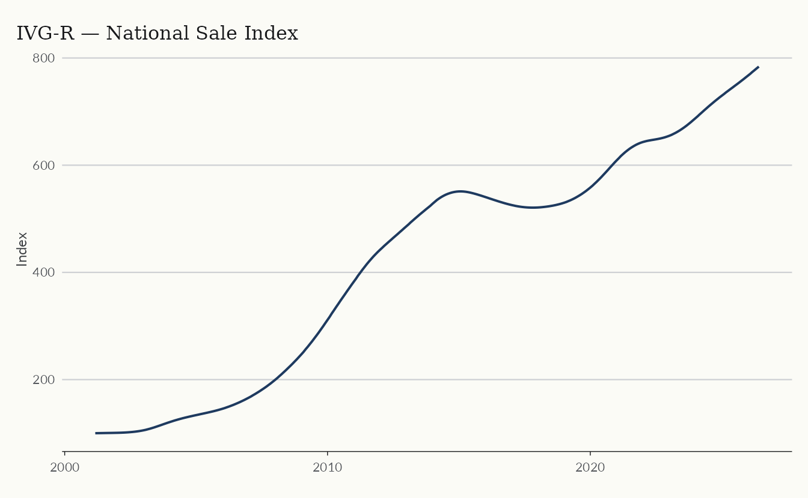
IGMI-R
The IGMI-R (Índice Geral do Mercado Imobiliário Residencial) is published by Abecip/FGV. It fits a hedonic pricing model to transaction prices, so it tracks closed deals rather than asking prices. Coverage spans major Brazilian cities from 2014.
igmi <- get_dataset("rppi", "igmi")
glimpse(igmi)
#> Rows: 1,639
#> Columns: 5
#> $ date <date> 2014-01-01, 2014-01-01, 2014-01-01, 2014-01-01, 2014-01-01,…
#> $ name_muni <chr> "São Paulo", "Rio De Janeiro", "Belo Horizonte", "Fortaleza"…
#> $ index <dbl> 100.00000, 100.00000, 100.00000, 100.00000, 100.00000, 100.0…
#> $ chg <dbl> NA, NA, NA, NA, NA, NA, NA, NA, NA, NA, NA, 0.0003654000, 0.…
#> $ acum12m <dbl> NA, NA, NA, NA, NA, NA, NA, NA, NA, NA, NA, NA, NA, NA, NA, …
main_cities <- c("São Paulo", "Rio De Janeiro", "Belo Horizonte", "Brasília")
subigmi <- igmi |>
filter(name_muni %in% main_cities)
ggplot(subigmi, aes(date, index, color = name_muni)) +
geom_line(linewidth = 0.8) +
labs(
title = "IGMI-R — Sale Index by City",
x = NULL,
y = "Index",
color = NULL
) +
theme_series()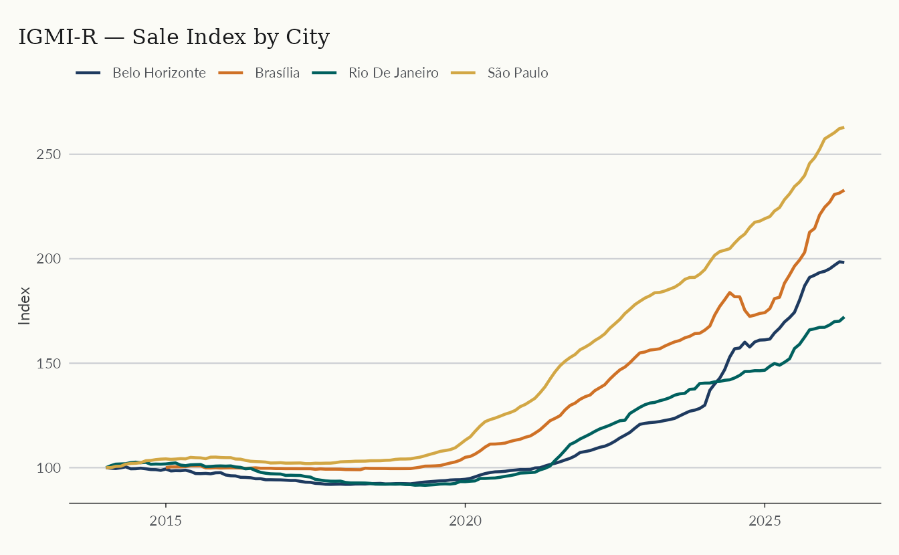
FipeZap (sale)
FipeZap covers more than 50 cities, more than any other Brazilian RPPI, and is based on median listing prices rather than transaction prices. It runs from 2008 for both residential and commercial markets, with breakdowns by number of bedrooms. Prices are stratified by region and income level using Census weights, and the final series is smoothed with a 3-month moving average.
Four columns are specific to FipeZap.
-
market(residential/commercial) -
rent_sale(rent/sale) -
rooms(1, 2, 3, 4+, total) -
variable(index, chg, acum12m, price_m2, yield)
fz <- get_dataset("rppi", table = "fipezap")
glimpse(fz)
#> Rows: 689,472
#> Columns: 7
#> $ date <date> 2008-01-01, 2008-01-01, 2008-01-01, 2008-01-01, 2008-01-01,…
#> $ name_muni <chr> "Brazil", "Brazil", "Brazil", "Brazil", "Brazil", "Brazil", …
#> $ market <chr> "residential", "residential", "residential", "residential", …
#> $ rent_sale <chr> "sale", "sale", "sale", "sale", "sale", "sale", "sale", "sal…
#> $ variable <chr> "index", "index", "index", "index", "index", "chg", "chg", "…
#> $ rooms <chr> "total", "1", "2", "3", "4", "total", "1", "2", "3", "4", "t…
#> $ value <dbl> 41.81107, 39.46609, 40.45048, 43.47948, 47.09432, NA, NA, NA…Working with this dataset requires more filtering than the others.
For most uses the three choices that matter are market
(‘residential’ or ‘commercial’), rent_sale (‘sale’ or
‘rent’), and the desired variable.
subzap <- fz |>
filter(
market == "residential",
rent_sale == "sale",
rooms == "total",
variable == "index",
name_muni %in% main_cities
)
ggplot(subzap, aes(date, value, color = name_muni)) +
geom_line(linewidth = 0.8) +
labs(
title = "FipeZap — Residential Sale Index",
x = NULL,
y = "Index",
color = NULL
) +
theme_series()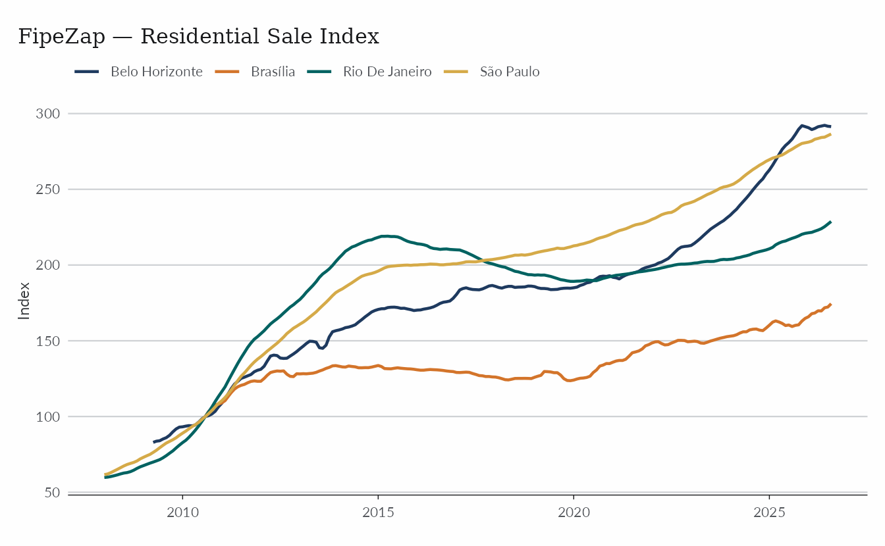
Comparing sale indices
The table argument also accepts "sale",
which stacks the available sale indices into a single
tibble.
sale_indices <- get_dataset("rppi", "sale")
glimpse(sale_indices)
#> Rows: 14,654
#> Columns: 6
#> $ source <chr> "IGMI-R", "IGMI-R", "IGMI-R", "IGMI-R", "IGMI-R", "IGMI-R", …
#> $ date <date> 2014-01-01, 2014-01-01, 2014-01-01, 2014-01-01, 2014-01-01,…
#> $ name_muni <chr> "São Paulo", "Rio De Janeiro", "Belo Horizonte", "Fortaleza"…
#> $ index <dbl> 100.00000, 100.00000, 100.00000, 100.00000, 100.00000, 100.0…
#> $ chg <dbl> NA, NA, NA, NA, NA, NA, NA, NA, NA, NA, NA, 0.0003654000, 0.…
#> $ acum12m <dbl> NA, NA, NA, NA, NA, NA, NA, NA, NA, NA, NA, NA, NA, NA, NA, …The stacked table keeps only rooms == "total" for
FipeZap, and the nationwide index appears under
name_muni == "Brazil" rather than a city name.
The plot below shows the three national sale indices. They tracked each other closely until the pandemic, after which the gap between them widens.
ggplot(comp_index, aes(date, acum12m * 100, color = source)) +
geom_line(linewidth = 0.7) +
labs(
title = "Comparing Sale Indices in Brazil",
subtitle = "12-month accumulated change (%)",
y = "%",
color = NULL
) +
theme_series()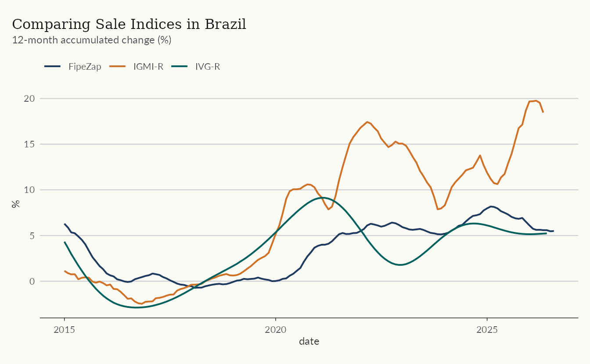
Rent indices
IVAR
The IVAR (Índice de Variação de Aluguéis Residenciais) is published by FGV and uses a repeat-rent methodology applied to actual rental contracts. It covers major Brazilian cities from 2019 and is available at both city and national level. Notably, the index has no smoothing, making it rather volatile.
ivar <- get_dataset("rppi", table = "ivar")
glimpse(ivar)
#> Rows: 455
#> Columns: 5
#> $ date <date> 2018-12-01, 2018-12-01, 2018-12-01, 2018-12-01, 2018-12-01,…
#> $ name_muni <chr> NA, "São Paulo", "Rio De Janeiro", "Belo Horizonte", "Porto …
#> $ index <dbl> 100.000, 100.000, 100.000, 100.000, 100.000, 99.852, 99.731,…
#> $ chg <dbl> NA, NA, NA, NA, NA, -1.480000e-03, -2.690000e-03, 8.310000e-…
#> $ acum12m <dbl> NA, NA, NA, NA, NA, NA, NA, NA, NA, NA, NA, NA, NA, NA, NA, …The series is noisy, so the plot adds a 5-month moving average from
the trendseries package.
library(trendseries)
ivar_trend <- ivar |>
filter(name_muni != "Brazil") |>
augment_trends(
value_col = "index",
group_cols = "name_muni",
methods = "ma",
window = 5
)
ggplot(ivar_trend, aes(date, color = name_muni)) +
geom_line(aes(y = index), lwd = 0.5, alpha = 0.5) +
geom_line(aes(y = trend_ma), lwd = 0.7) +
geom_hline(yintercept = 100) +
scale_x_date(date_breaks = "1 year", date_labels = "%Y") +
labs(
title = "IVAR — City Rent Indices",
subtitle = "Smoothed moving average (5-month window)",
x = NULL,
y = "Index"
) +
theme_series()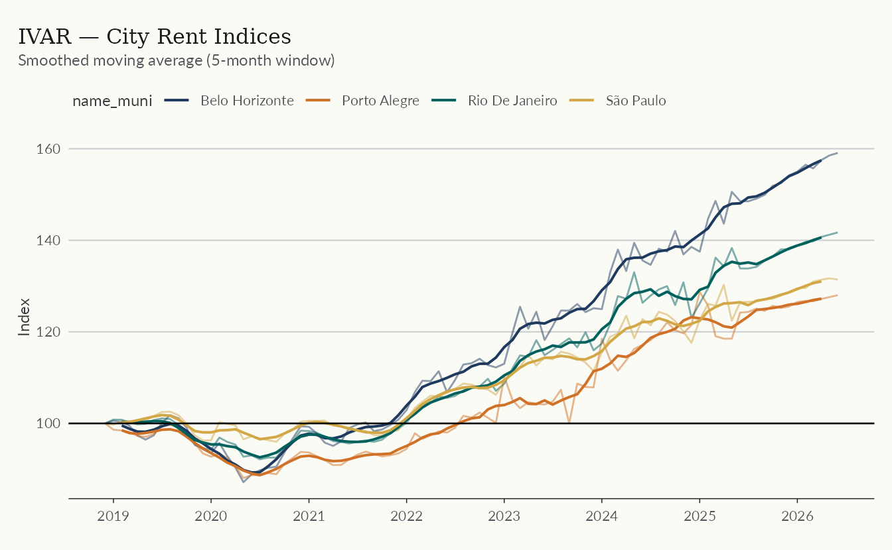
IQA and IQAIW
QuintoAndar published two successive rental indices for São Paulo and Rio de Janeiro. The IQA (2019–mid-2023) was based on median contract prices. In mid-2023 it rebranded to IQAIW (Índice QuintoAndar ImovelWeb) and adopted a hedonic model incorporating both listing and contract prices. The two series are not directly comparable due to the methodology break.
The original IQA compared median contract prices, stratified by region and income level with Census weights, much like FipeZap. The IQAIW uses a hedonic model (spatial GAM), double imputation, and a similar Census-based stratification.
The IQA source data reports rent prices (R$/m²) rather than an index,
so building an index requires a base-100 normalization. The package
ships an index column already normalized to the first
available observation.
iqa <- get_dataset("rppi", "iqa")
iqaiw <- get_dataset("rppi", "iqaiw")
glimpse(iqaiw)
#> Rows: 1,660
#> Columns: 6
#> $ date <date> 2021-05-01, 2021-06-01, 2021-07-01, 2021-08-01, 2021-09-01,…
#> $ name_muni <chr> "Belo Horizonte", "Belo Horizonte", "Belo Horizonte", "Belo …
#> $ rooms <chr> "1", "1", "1", "1", "1", "1", "1", "1", "1", "1", "1", "1", …
#> $ index <dbl> 100.00000, 100.00508, 99.51814, 99.17578, 99.24295, 99.99587…
#> $ chg <dbl> NA, 5.084921e-05, -4.869240e-03, -3.440099e-03, 6.772126e-04…
#> $ acum12m <dbl> NA, NA, NA, NA, NA, NA, NA, NA, NA, NA, NA, NA, 0.1598557, 0…
ggplot(iqa, aes(date, index, color = name_muni)) +
geom_line(linewidth = 0.7) +
geom_hline(yintercept = 100) +
scale_x_date(date_breaks = "1 year", date_labels = "%Y") +
labs(
title = "IQA — Rent Index",
subtitle = "Index (2019/06 = 100)",
y = "Index",
color = NULL
) +
theme_series()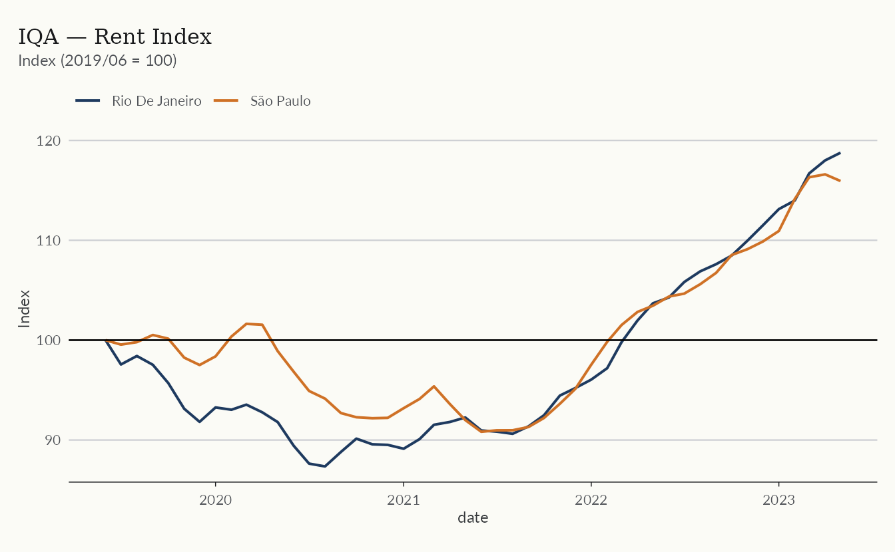
The newer IQAIW index covers more cities and, like FipeZap, breaks
results down by number of bedrooms (rooms).
ggplot(
subset(iqaiw, rooms == "total" & !is.na(acum12m)),
aes(date, acum12m * 100, color = name_muni)
) +
geom_line(linewidth = 0.7) +
scale_x_date(date_breaks = "1 year", date_labels = "%Y") +
labs(
title = "IQAIW — Rent Index",
subtitle = "Accumulated 12-month change (%)",
y = "%",
color = NULL
) +
theme_series()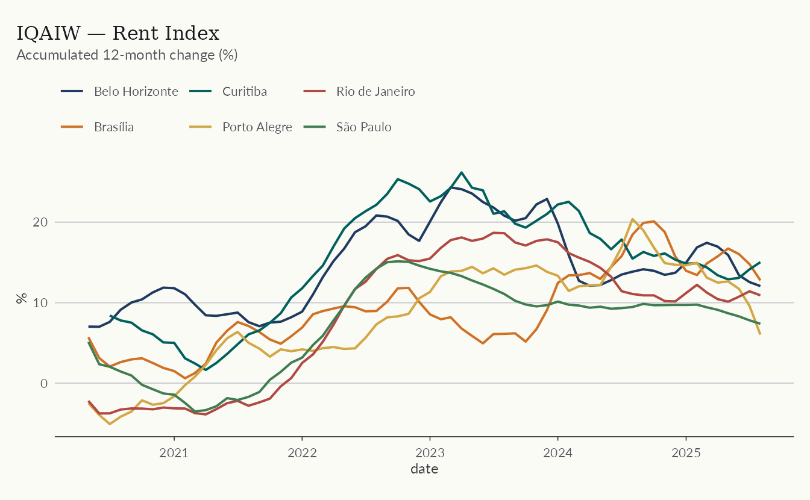
The package keeps the discontinued IQA for its history. Plotting both series together shows where the methodology break falls.
quintoandar <- bind_rows(
list(
"IQA" = mutate(iqa, rooms = "total"),
"IQAIW" = iqaiw
),
.id = "source"
)
quintoandar_spo <- quintoandar |>
filter(name_muni == "São Paulo", rooms == "total")
ggplot(quintoandar_spo, aes(date, index, color = source)) +
geom_line(linewidth = 0.7) +
geom_hline(yintercept = 100) +
scale_x_date(date_breaks = "1 year", date_labels = "%Y") +
labs(
title = "QuintoAndar Rent Index — São Paulo",
subtitle = "IQA (pre-2023) and IQAIW (post-2023) use different methodologies",
x = NULL,
y = "Index",
color = NULL
) +
theme_series()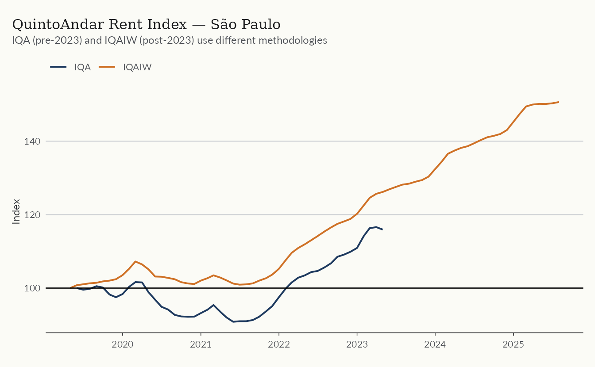
FipeZap (rent)
FipeZap provides the broadest geographic coverage for rental indices, but is based on median listing prices rather than contracts. The example below shows the 12-month accumulated change across cities with complete data from 2021.
fz <- get_dataset("rppi", table = "fipezap")
glimpse(fz)
#> Rows: 689,472
#> Columns: 7
#> $ date <date> 2008-01-01, 2008-01-01, 2008-01-01, 2008-01-01, 2008-01-01,…
#> $ name_muni <chr> "Brazil", "Brazil", "Brazil", "Brazil", "Brazil", "Brazil", …
#> $ market <chr> "residential", "residential", "residential", "residential", …
#> $ rent_sale <chr> "sale", "sale", "sale", "sale", "sale", "sale", "sale", "sal…
#> $ variable <chr> "index", "index", "index", "index", "index", "chg", "chg", "…
#> $ rooms <chr> "total", "1", "2", "3", "4", "total", "1", "2", "3", "4", "t…
#> $ value <dbl> 41.81107, 39.46609, 40.45048, 43.47948, 47.09432, NA, NA, NA…This is the same table used in the sale example above; only the
rent_sale filter changes.
fz_rent <- fz |>
filter(
market == "residential",
rent_sale == "rent",
rooms == "total",
variable == "acum12m",
date >= as.Date("2021-01-01")
)
sel_cities <- fz_rent |>
filter(date == as.Date("2021-01-01"), !is.na(value)) |>
pull(name_muni)The plot below uses every city with observations starting in 2021, which shows how far FipeZap’s geographic coverage reaches.
ggplot(subset(fz_rent, name_muni %in% sel_cities), aes(date, value * 100)) +
geom_line(linewidth = 0.7, color = color_palette[1]) +
geom_hline(yintercept = 0) +
facet_wrap(vars(name_muni)) +
labs(
title = "FipeZap — 12-month Rent Change by City",
x = NULL,
y = "Accumulated 12-month change (%)"
) +
theme_series()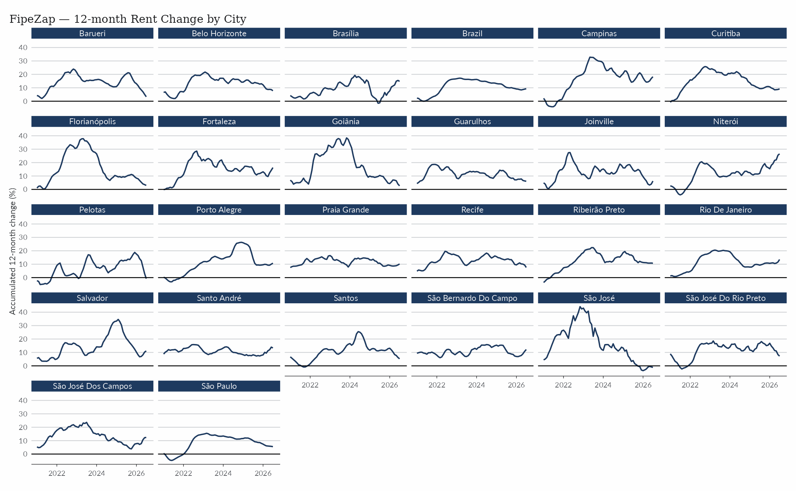
SECOVI-SP
SECOVI-SP publishes a residential rent index for the city of São Paulo. The series tracks median contract prices for residential leases and runs from 2008, making it one of the longest rent series for a single Brazilian city.
secovi <- get_dataset("rppi", "secovi_sp")
glimpse(secovi)
#> Rows: 236
#> Columns: 5
#> $ date <date> 2004-12-01, 2005-01-01, 2005-02-01, 2005-03-01, 2005-04-01,…
#> $ name_muni <chr> "São Paulo", "São Paulo", "São Paulo", "São Paulo", "São Pau…
#> $ index <dbl> 100.000, 100.500, 100.802, 101.003, 101.104, 101.306, 101.71…
#> $ chg <dbl> NA, 0.0050000000, 0.0030049751, 0.0019940081, 0.0009999703, …
#> $ acum12m <dbl> NA, NA, NA, NA, NA, NA, NA, NA, NA, NA, NA, NA, 0.04176000, …
ggplot(secovi, aes(date, acum12m * 100)) +
geom_line(color = color_palette[1], linewidth = 0.7) +
geom_hline(yintercept = 0) +
scale_x_date(date_breaks = "2 years", date_labels = "%Y") +
labs(
title = "SECOVI-SP — Residential Rent Index",
subtitle = "12-month accumulated change (%)",
x = NULL,
y = "%"
) +
theme_series()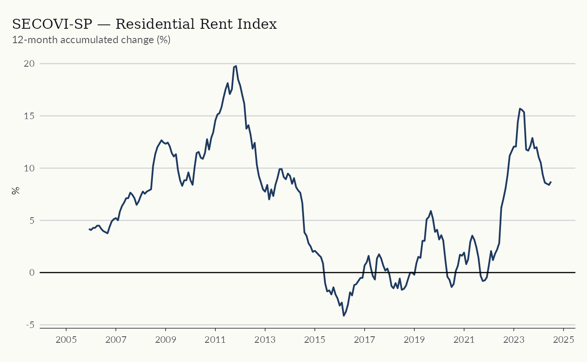
Comparing indices
Stacked tables
The "sale" and "rent" tables stack all
available indices into a single data frame, making cross-source
comparisons straightforward.
rent_indices <- get_dataset("rppi", "rent")
rent_indices_comp <- rent_indices |>
filter(
name_muni %in% c("São Paulo", "Rio De Janeiro"),
date >= as.Date("2019-01-01")
)
ggplot(rent_indices_comp, aes(date, acum12m * 100, color = source)) +
geom_line(linewidth = 0.7) +
geom_hline(yintercept = 0) +
facet_wrap(vars(name_muni)) +
scale_x_date(date_breaks = "1 year", date_labels = "%Y") +
labs(
title = "Rent Indices — São Paulo and Rio de Janeiro",
subtitle = "12-month accumulated change (%)",
y = "Accumulated change (%)",
color = NULL
) +
theme_series()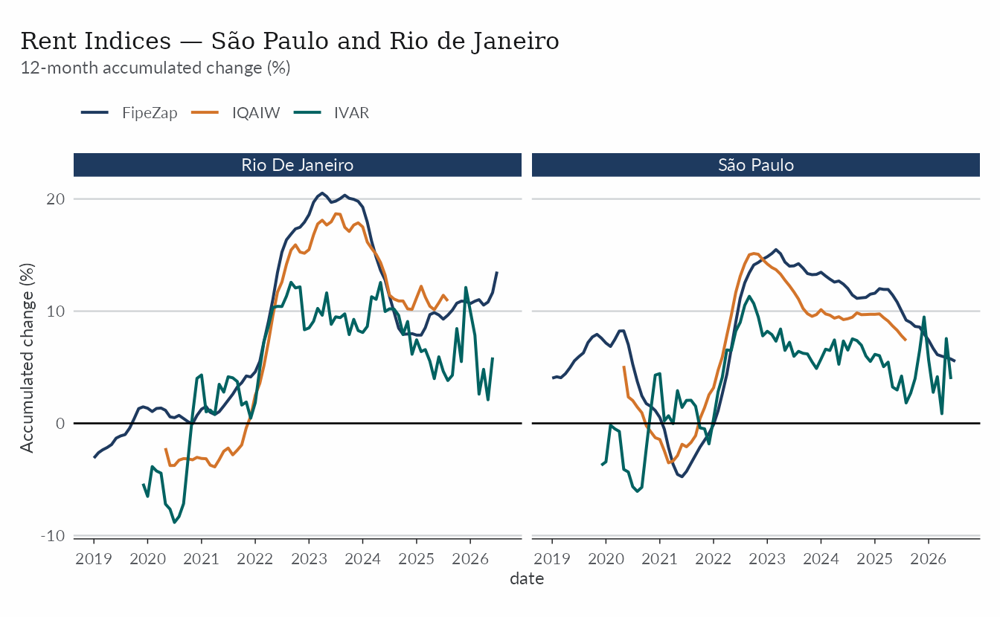
Normalizing to a common base
Each index has its own base period, so levels are not comparable until they share one. The example below rebases the national sale indices to January 2018 = 100.
sales <- get_dataset("rppi", "sale")
national <- sales |>
filter(
name_muni == "Brazil",
date >= as.Date("2018-01-01"),
date <= as.Date("2023-12-01")
)
national_rebased <- national |>
arrange(source, date) |>
mutate(
index_rebased = index / first(index) * 100,
.by = source
)
total_growth <- national_rebased |>
summarise(
growth = last(index_rebased) - first(index_rebased),
date = last(date),
index_rebased = last(index_rebased),
.by = source
) |>
mutate(label = sprintf("%s:\n+%.1f%%", source, growth))
ggplot(national_rebased, aes(date, index_rebased, color = source)) +
geom_line(linewidth = 0.8) +
geom_hline(yintercept = 100) +
geom_label(
data = total_growth,
aes(label = label),
hjust = 0,
nudge_x = 30,
show.legend = FALSE,
size = 3
) +
scale_x_date(
date_breaks = "1 year",
date_labels = "%Y",
expand = expansion(mult = c(0, 0.125))
) +
labs(
title = "Brazil National Sale Indices — Rebased to Jan 2018",
x = NULL,
y = "Index (Jan 2018 = 100)",
color = NULL
) +
theme_series()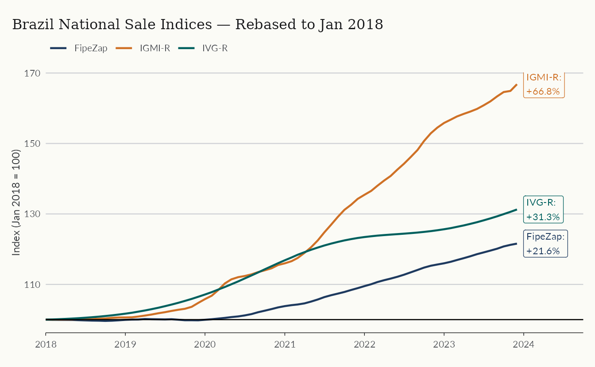
International: BIS
The BIS dataset carries quarterly residential property price indices for 60+ countries, so you can compare Brazil against other markets.
bis <- get_dataset("rppi_bis")
bis_sub <- bis |>
filter(
ref_area_name %in% c("Brazil", "United States", "Germany", "Japan"),
is_nominal == 0,
unit == "index",
date >= as.Date("2000-01-01")
)
ggplot(bis_sub, aes(date, value, color = ref_area_name)) +
geom_line(linewidth = 0.8) +
geom_hline(yintercept = 100, linetype = "dashed", alpha = 0.4) +
labs(
title = "Real Residential Property Prices",
subtitle = "BIS, index 2010 = 100",
x = NULL,
y = "Index",
color = NULL
) +
theme_series()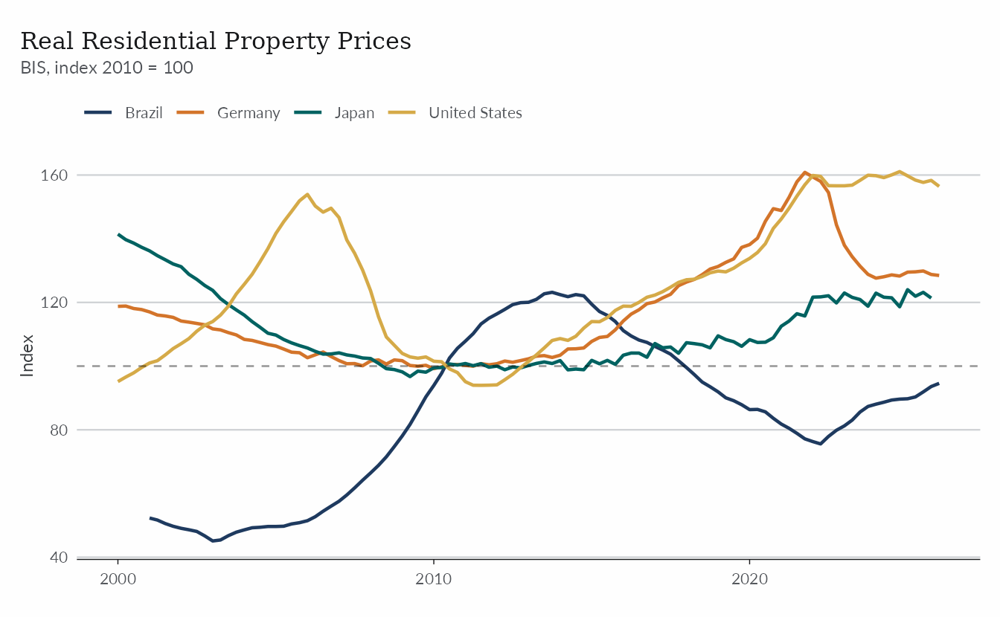
Index reference
| Index | Source | Coverage | Methodology | From |
|---|---|---|---|---|
| IVG-R | BCB | National | Median appraisal prices, HP-filtered | 2001 |
| IGMI-R | ABECIP/FGV | Major cities | Hedonic (transaction prices) | 2014 |
| FipeZap | FIPE/ZAP | 50 cities | Median listing prices | 2008 |
| IVAR | FGV | Major cities + national | Repeat-rent (contracts) | 2019 |
| IQA | QuintoAndar | São Paulo, Rio | Median contract prices | 2019 |
| IQAIW | QuintoAndar | São Paulo, Rio | Hedonic (listing + contracts) | 2023 |
| SECOVI-SP | SECOVI-SP | São Paulo | Median prices (transactions) | 2008 |